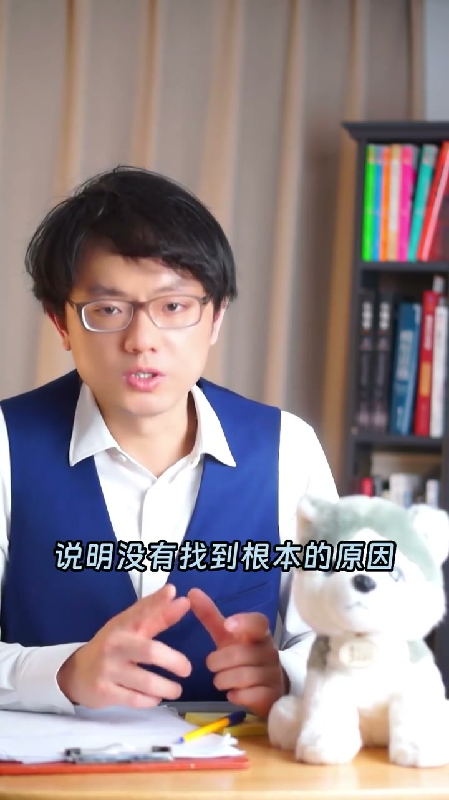
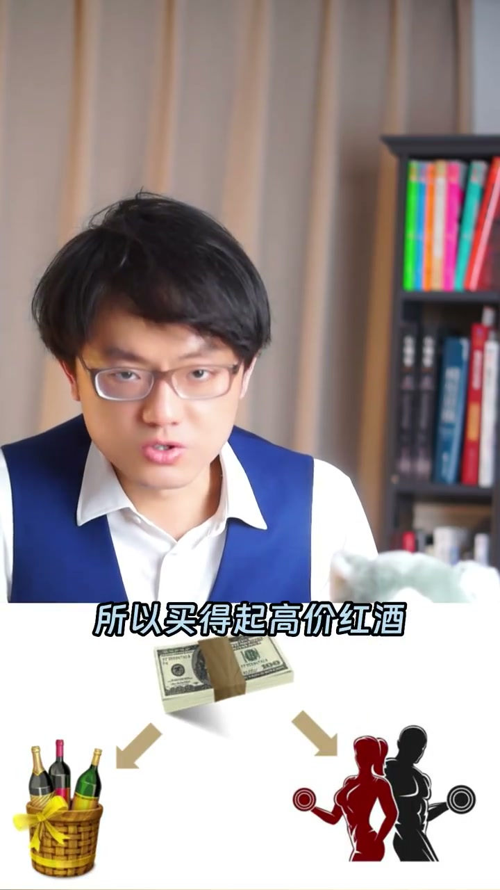

内容要点
一支 1 分 45 秒的逻辑课：用「一只鸡和一只蛋有几种关系」开场，拆穿分析报告里最常见的错误——把相关关系当成因果关系。鸡生蛋、蛋生鸡之外还有第三种关系（都是另一只鸡生的），类比「喝高价红酒的人身体健康」其实共享「很有钱」这个共同原因。
知识结构
提问「一只鸡跟一只蛋有几种关系的可能性」：鸡生蛋、蛋生鸡——但还有第三种：这只鸡和蛋都是另外一只鸡生的。用来在闲聊时拆穿喜欢炫耀的人。
销售下滑的分析报告列出的原因往往不是因果关系而是相关关系。用「蛋大所以鸡大」证明不了必然因果；喝高价红酒的人健康，共同原因是有钱。
去参加台喜欢炫耀的人；挑战篇——判断分析报告里是因果还是相关、如何证明；用鸡和蛋或红酒与健康的例子讲给他人听。
相关 ≠ 因果：两个变量一起变化，可能共享第三个「共同原因」。分析报告没找到共同原因前，都不能宣称找到了根因。
00:00-00:25鸡和蛋的三种关系
视频开头说：「你身边有没有这样一个人，他们其实并不这么聪明，但很喜欢炫耀？有的的话今天跟你分享一个很 nice 的拆人家台的方法。」方法是闲聊时问：「请问一只鸡跟一只蛋有几种关系的可能性？」
「两种可能性对吧？鸡生蛋、蛋生鸡。不对，还有另外一种可能性——这只鸡跟这只蛋都是另外一只鸡生的。」

00:26-01:10相关关系不是因果关系
讲者交代问题来源：「你可以近似地把鸡生蛋、蛋生鸡类比成因果关系。有一次给一个销售部门评估分析报告，分析销售下滑的原因。所谓分析报告就是要找出因跟果，而且要证明它们之间存在必然的因果关系。」
「而实际情况是销售部门列出来的原因都不是因果关系，而是相关关系。如果是相关关系，说明没有找到根本的原因，要继续找。」他举例：「因为蛋大所以鸡大，能不能证明鸡跟蛋之间存在必然因果关系？不能，更有可能是相关关系。」
再举一例：「调查研究发现，喝高价红酒的人身体都很健康。那你能不能证明高价红酒和身体健康之间存在必然因果关系？也不能。它们有个共同的原因——叫做很有钱。因为很有钱所以买得起高价红酒，因为很有钱所以花钱投资自己的身体。」

01:11-01:47应用：拆台与挑战
结尾给出两个用法：「第一，可以去参加台喜欢炫耀的某某人；第二，挑战篇——这个分析报告里是因果关系还是相关关系？怎么证明？然后你可以用鸡跟蛋或者红酒与健康的例子说给他们听。」
最后补了一个彩蛋：「鸡跟蛋的关系，鸡生蛋、蛋生鸡，鸡和蛋都是另外一只鸡生的，三种对吧？不对，是四种——还有一种是，家里冰箱里的那只鸡蛋和菜场里的那只鸡之间没有任何关系。」
完整转录（59段）
以下文本由 Whisper medium 模型自动转录，可能存在少量识别误差，已尽可能修正。
你身边有没有这样一个人,他们其实并不这么聪明,但很喜欢显牌炫耀
有的话今天跟你分享一个很nice的拆人家台的方法
你可以在茶余饭后闲聊时这么问的
请问一只鸡跟一只蛋有几种关系的可能性?
两种可能性对吧?
鸡生蛋、蛋生鸡
不对,还有另外一种可能性
这只鸡跟这只蛋都是另外一只鸡生的
这个问题是怎么来的呢?
你可以近似地把鸡生蛋、蛋生鸡类比成因果关系
有一次给一个销售部门评估分析报告PBT
分析下销售下滑的原因
所谓分析报告就是要找出因跟果
而且要证明它们之间存在的必然因果关系
而实际情况时销售部门列出来的原因都不是因果关系
而是相关关系
如果是相关关系,说明没有找到根本的原因,要继续找
为了讲清楚因果关系跟相关关系的区别
我跟他们讲了鸡跟蛋的故事
因为蛋大所以鸡大
能不能证明鸡跟蛋之间存在的必然因果关系?
不能
更有可能是相关关系
什么叫相关关系?
就是这只鸡跟这只蛋都是另外一只鸡生的
再举个例子
调查研究发现
喝高价红酒的人身体都很健康
那你能不能证明高价红酒和身体健康之间存在的必然因果关系?
也不能
喝得起高价红酒和身体健康之间更有可能是相关关系
因为它们有个共同的原因
叫做很有钱
因为很有钱所以买得起高价红酒
因为很有钱所以花钱投资自己的身体健康
类似于鸡跟蛋都是另外一只鸡生的
好了
今天听了杨老师的这条视频
你可以怎么用呢?
第一
可以去参加台喜欢炫耀的某某人
第二
挑战篇
这个分析报告里是因果关系还是相关关系?
怎么证明?
然后你可以用鸡跟蛋或者红酒与健康的例子说给他们听
最后
鸡跟蛋的关系
鸡生蛋
蛋生鸡
鸡和蛋都是另外一只鸡生的
三种对吧?
不对
是四种
还有一种
家里冰箱的那只鸡蛋和菜场里的那只鸡之间没有任何关系
其实是四种关系
关注杨老师
以后继续跟你讲类似鸡和蛋的职场故事